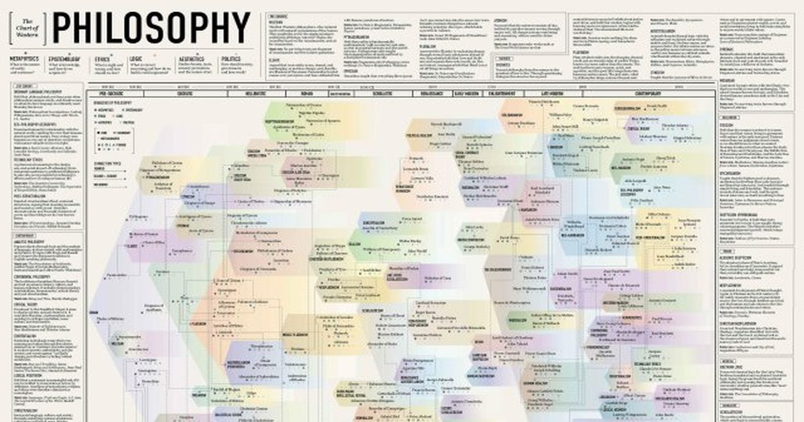

Карта западной философии: 2600 лет на одной ленте
Big Think выпустил наглядную хронологию западной философии, охватывающую 2600 лет от Фалеса до Жижека. Инфографика объединяет школы, направления и связи между мыслителями в единую ленту с цветовой маркировкой основных проблем. Это позволяет ориентироваться в массиве имен так же уверенно, как в грамотно подобранном уходе за кожей.
Хронология и структура схемы
На одной ленте размещены более двух с половиной тысяч лет западной мысли: от Милетской школы и ранних софистов до современных постструктуралистов и Жижека. Хронологическая шкала позволяет сразу увидеть, как сменялись доминирующие темы — онтология, эпистемология, этика, эстетика или политическая философия — и какие направления переплетались друг с другом. Визуальные значки рядом с каждым течением показывают основной и второстепенный фокус, что работает как ингредиентный состав ухода: вы сразу понимаете, какой «активный компонент» преобладает в данной традиции.
Авторы схемы отказались от классификации по разделам философии, потому что большинство течений затрагивают несколько областей одновременно. Вместо этого они построили временную линию и добавили систему символов, которая работает как маркировка косметического средства: основное действующее вещество, вспомогательные и консерванты. Такой подход помогает избежать наложения одних идей на другие и даёт чёткую карту навигации по обширному материалу.
В результате получается не просто плакат, а навигатор, который можно использовать как справочник при выборе следующей книги или курса. Каждая школа сопровождается кратким комментарием и списком ключевых текстов, что напоминает рекомендации по режиму ухода: базовый уход, интенсивная процедура и поддержание результата. Такой формат снижает тревогу перед объёмом информации и позволяет двигаться шаг за шагом.

Принципы отбора и обозначения направлений
При формировании списка участников редакция столкнулась с вопросом о включении античных софистов. В современном языке слово «софист» несет негативный оттенок, но в V–IV веках до н.э. это были платные наставники риторики и аретэ, ближе к современным коучам, чем к системным мыслителям. Платон же в диалогах называл их учителями обмана, что и закрепило пренебрежительное значение термина.
Решение оставить софистов за рамками основной линии обусловлено тем, что их деятельность не формировала самостоятельную философскую традицию, а скорее предоставляла навыки публичных выступлений. Это аналогично исключению из ухода декоративных средств, которые не влияют на состояние кожи, а лишь создают визуальный эффект. Таким образом, схема остаётся фокусированной на направлениях, задававших вектор развития мысли.
Другим вызовом стало размещение множества ветвей платонизма: ранняя академия, скептицизм, неоплатонизм и многие другие. Редакторам пришлось выбирать наиболее влиятельные отсрочки, чтобы не перегрузить ленту, как при подборе активных веществ для курса — лишние компоненты могут вызвать раздражение. Итоговый набор отражает ключевые этапы эволюции идей без излишней детализации.

Неожиданные находки и тон философских споров
Самым неожиданным открытием стала острая полемичность философов друг к другу. Шопенгауэр называл Гегеля «плоского, нудного, безграмотного шарлатана», Вольтер отвечал Руссо: «никогда так много остроумия не тратилось, чтобы сделать нас глупее», а Ницше характеризовал Канта как «самый уродливый калек-концептуалист». Такие высказывания напоминают клинические случаи, когда несовместимые активные вещества вызывают воспаление вместо синергии.
Эти цитаты показывают, что интеллектуальная среда всегда была полна эмоциональных зарядов, и даже великие умы не избегали личных нападок. Понимание этого контекста помогает читателю не воспринимать философские тексты как стерильные инструкции, а видеть за ними живую дискуссию — как при оценке отклика кожи на новый состав: важно учитывать не только декларируемые свойства, но и реальную реакцию.
Плакат «Карта западной философии» доступен в магазине Big Think и может служить наглядным пособием для самостоятельного изучения. Он структурирует хаос имен и идей, превращая бесконечное море в понятную схему, по которой можно двигаться, не теряя ориентации. Подобный подход делает изучение философии системным процессом, сравнимым с регулярным уходом за кожей: регулярность и понимание состава дают устойчивый результат.
Коротко: Инфографика превращает хаос философских традиций в структурированную навигацию, где каждый этап помечен ключевыми темами. Понимание логики отбора и обозначений помогает выбирать дальнейшее чтение без перегруза. Регулярное обращение к такой карте делает изучение мысли системным и предсказуемым.
Какую философскую эпоху вы бы хотели изучить следующей, опираясь на такую карту?